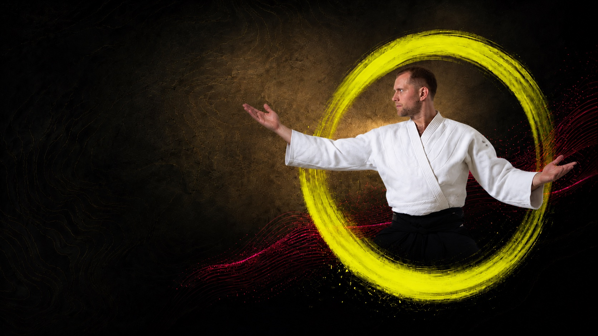
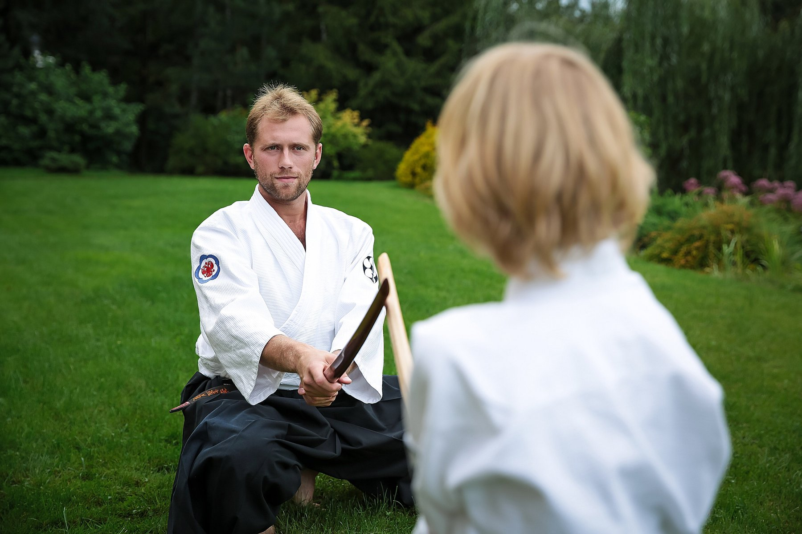

Тело
Координация, равновесие, осанка, правильное дыхание. Безопасное падение — навык на всю жизнь: гололёд, велосипед, лестница.
Школа айкидо · Москва
Традиционное айкидо под руководством наставников проекта «Спорт как искусство»: характер, координация и спокойствие. Индивидуальные и групповые занятия, семейные тренировки.
Записаться на тренировку
О школе
Айкидо — японское боевое искусство, в котором сила рождается из внимания, а не из противостояния. Мы соединяем традицию будо с современным взглядом на развитие человека.
В группе занимаются дети с 5 лет, подростки и взрослые — от первых страховок-укэми до аттестаций на степени. Приходят семьями: айкидо — путь для человека любого возраста и подготовки.
Три опоры, из которых складывается рост занимающегося — в теле, характере и отношении к людям.
Координация, равновесие, осанка, правильное дыхание. Безопасное падение — навык на всю жизнь: гололёд, велосипед, лестница.
Уверенность, самоконтроль, умение сохранять спокойствие в стрессе. Агрессия трансформируется, а не поощряется.
Этикет, взаимоуважение, внимание к партнёру. Занятие начинается с этикетом и заканчивается этикетом.

Айкидо для детей
Айкидо не учит драться — оно учит стоять твёрдо, чувствовать момент и решать конфликт, не опускаясь до драки.
У них разные цели — и это честно сформулировано. Сравнение с боксом, карате, тхэквондо и дзюдо.
| Айкидо | Соревновательные единоборства | |
|---|---|---|
| Главная цель | Развитие личности: уверенность, самоконтроль, гармония | Победа над соперником |
| Соревнования | Аттестации, фестивали, показательные выступления | Турниры с раннего возраста, рейтинги, отбор |
| Травмоопасность | Минимальная: нет ударов, работа контролируемая | От умеренной до высокой — есть спарринги |
| Отношение к агрессии | Агрессия трансформируется: контроль без уничтожения | Агрессия — рабочий инструмент спорта |
| Кому подходит | Любой ребёнок: пол, комплекция и физданные не важны | Частичен отбор по физическим данным |
| Срок практики | Путь всей жизни: занимаются от 5 до 70+, приходят семьями | Спортивная карьера обычно завершается к 25–30 годам |
Если цель — медали и спортивная карьера, вам в соревновательный вид. Если цель — уверенный и воспитанный ребёнок, который умеет постоять за себя без драки, — это айкидо.
Айкидо для взрослых
Взрослые приходят в айкидо за разным: кто-то — за движением и осанкой после офиса, кто-то — за спокойствием и ясной головой в стрессе. Здесь нет соперников и заведомых проигравших — только собственная траектория роста.
Как проходит занятие
Занятие выстроено от простого к сложному и заканчивается так же, как начинается, — этикетом.
Приветствиеэтикет и настрой: практика начинается с уважения к залу и партнёрам.
Разминкасуставная гимнастика, дыхание, подготовка тела к работе.
Базастраховки-укэми, стойки, перемещения и принцип движения от центра.
Партнёрствотехника в парах: учимся доверять, чувствовать момент и заботиться о партнёре.
Завершениеспокойная практика, итоги и этикет — до следующей тренировки.
Вопросы и ответы
Дети приходят с 5 лет. В айкидо занимаются от 5 до 70+: есть группы детей, подростков и взрослых, часто тренируются семьями.
Травмоопасность минимальна: в традиционном айкидо нет ударов, работа парная и контролируемая. Обязательная база — страховки-укэми, умение безопасно падать.
Цель — не победа над соперником, а развитие личности. Рост через аттестации на степени, а не через турниры с проигравшими. Агрессия трансформируется: техника учит контролировать, не уничтожая.
Да. В айкидо нет отбора по физическим данным: занимается любой ребёнок. Ребёнка сравнивают не с другими, а с ним вчерашним.
Удобная одежда и желание. Форму и инвентарь на старте покупать не нужно. Записаться можно через Telegram или по телефону.
Запись открыта
Индивидуальные и групповые занятия айкидо для детей, подростков и взрослых в Москве. Ответим в мессенджере, подберём группу и удобное время.
Записаться на тренировку